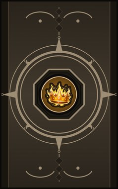
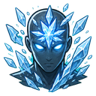

Technique trees › Genjutsu
Enchantment
10 techniques in the Genjutsu tab.
Unlocks once the pawn has World of Naruto's genjutsu tree.
Boost of the Strong D
Chakra 10. Enchant a friend with strength for half an hour.
Boost of the Strong D
Chakra 10. Enchant a friend with strength for half an hour.
Enchant a friend with strength for half an hour.
| Rank | Chakra | Cooldown | Class level |
|---|---|---|---|
| D | 10 | 15 s | 2 |
Boost of the Quick D
Chakra 10. Enchant a friend with speed for half an hour.
Boost of the Quick D
Chakra 10. Enchant a friend with speed for half an hour.
Enchant a friend with speed for half an hour.
| Rank | Chakra | Cooldown | Class level |
|---|---|---|---|
| D | 10 | 15 s | 3 |
Stupor D
Chakra 10. One enemy drifts into a daze and stops for a moment.
Stupor D
Chakra 10. One enemy drifts into a daze and stops for a moment.
One enemy drifts into a daze and stops for a moment.
| Rank | Chakra | Cooldown | Class level |
|---|---|---|---|
| D | 10 | 15 s | 4 |
Heroism C
Chakra 18. Fill a friend with courage and focus for half an hour.
Heroism C
Chakra 18. Fill a friend with courage and focus for half an hour.
Fill a friend with courage and focus for half an hour.
| Rank | Chakra | Cooldown | Class level |
|---|---|---|---|
| C | 18 | 25 s | 5 |
Blood Frenzy C
Chakra 18. Send a friend into a furious, reckless rage for a fight.
Blood Frenzy C
Chakra 18. Send a friend into a furious, reckless rage for a fight.
Send a friend into a furious, reckless rage for a fight.
| Rank | Chakra | Cooldown | Class level |
|---|---|---|---|
| C | 18 | 25 s | 7 |
Crown of Courage B
Chakra 30. Every friend in an area is steeled against fear for an hour.
Crown of Courage B
Chakra 30. Every friend in an area is steeled against fear for an hour.
Every friend in an area is steeled against fear for an hour.
| Rank | Chakra | Cooldown | Class level |
|---|---|---|---|
| B | 30 | 1 hour | 9 |
Crushing Despair B
Chakra 30. Enemies in an area lose all hope: they fight badly.
Crushing Despair B
Chakra 30. Enemies in an area lose all hope: they fight badly.
Enemies in an area lose all hope: they fight badly.
| Rank | Chakra | Cooldown | Class level |
|---|---|---|---|
| B | 30 | 1 hour | 10 |
Halting Gaze B
Chakra 30. A look that stops one enemy dead for ten seconds.
Halting Gaze B
Chakra 30. A look that stops one enemy dead for ten seconds.
A look that stops one enemy dead for ten seconds.
| Rank | Chakra | Cooldown | Class level |
|---|---|---|---|
| B | 30 | 1 hour | 11 |

Freezing Glance A
Chakra 50. A glance that freezes one enemy in place for half a minute.
Freezing Glance A
Chakra 50. A glance that freezes one enemy in place for half a minute.
A glance that freezes one enemy in place for half a minute.
| Rank | Chakra | Cooldown | Class level |
|---|---|---|---|
| A | 50 | 1.6 hours | 15 |
Psychic Blast S
Chakra 95. S-rank. A wave of will crashes over an area and knocks every enemy senseless.
Psychic Blast S
Chakra 95. S-rank. A wave of will crashes over an area and knocks every enemy senseless.
S-rank. A wave of will crashes over an area and knocks every enemy senseless.
| Rank | Chakra | Cooldown | Class level |
|---|---|---|---|
| S | 95 | 8 hours | 19 |
Chakra is the technique's base cost, the number in its def. In play it is multiplied by the pawn's chakra energy usage multiplier, which traits (chakra artificer 90%, volatile conduit 110%), World of Naruto genes and jutsu enhancements change, so the technique window can show a slightly different number for each ninja. Cooldowns are in-game time, as the technique window shows them, and the pawn's cooldown stat shortens or lengthens them. World of Naruto gives every ninja a base of 100 maximum chakra; genes and traits change it.